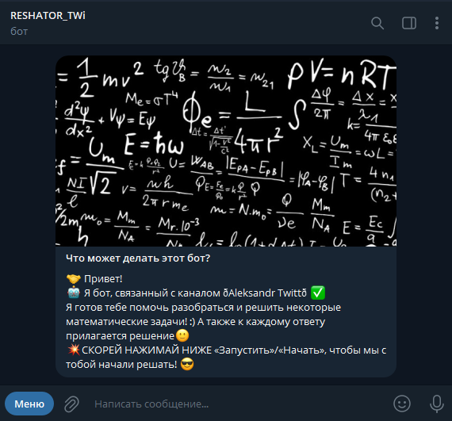

My Projects
You are in the section "My Projects" Here you will see what projects I did and what I used! :)
I started my IT journey with Python. Hence the first project was written in Python. And now you will find out what I took as a basis, the foundation of projects, etc.
My first project is the telegram bot RESHATOR_TWi.
With the help of this service, users can still solve various mathematical problems/examples to this day. This includes the solution of linear equations, and the solution of quadratic equations, and the solution of examples using the abbreviated multiplication formula, and the solution-finding of the sides of a right-angled triangle using the Pythagorean theorem (t.). There are also many other functions that I cannot fully describe here ( But you have the opportunity to try them out! You will be taken to the RESHATOR_TWi_bot telegram bot chat and will be able to solve examples/problems!
I wrote RESHATOR_TWi'a, as mentioned above, in Python. Programmed without knowledge of OOP (Object Oriented Programming) and asynchrony. Wrote with the pyTelegramBotApi library using various modules, such as Telebot and others.
Below is a small piece of code, check it out if you are interested!
Code:def start(message):
bot.send_message("👋 Привет, {first.name}! Я RESHATOR_TWi и могу помочь с различными математическими операциями :) Сейчас Вы в главном блоке -- 🌐 Главная / MAIN 🌐 ✔️*-*-*-*-*-*-*-*-*-*-*-*-*-*-*-*-*-*-*\n\n{first.name},👇 ниже мои основные команды, представленные, как команда-обозначение, но в самом низу есть кнопки, если желаете воспользуйтесь ими, ☝️ нажав на нужую Вам кнопку-команду.\n\n/main - Главная\n/my_email - Мой EMail\n/start - Перезапуск/Старт работы бота\n/feedback - Обратная связь\n/help - Помощь\n/donat_help_qiwi - Донат/Поддержка Qiwi\n/back_to_channel - Перейти в канал: Aleksandr Twitt ")
In fact, my final bot code came out +- 2100 lines of code. For some, this is a lot, for some it is not enough, but I know one thing that this code could be reduced to about 1700 lines of code, knowing OOP + asynchrony. The bot uses various pyTelegramBotApi functions, among which there are Call requests. In bot messages, you can see callback buttons, these are buttons located at the bottom of the bot message. Their plus is less cache on the device, that is, I mean by the word CASH - extra messages. When you click on the button, the message from the bot automatically changes to another one - it is edited. This is a huge plus. The bot is written in Russian.
Below are pieces of the bot from Telegram Desktop.
My second project is the RESHATOR_TWi telegram bot.
With this service, users can still download the VPN configuration for WireGuard (No ads!). This includes Germany, Luxembourg, Switzerland and Latvia. There are also many other features that I can't fully describe here :( But you have the opportunity to try them out! By clicking on the link, you will be taken to the TwiT_Yel_VPN_bot telegram bot chat and will be able to solve examples/problems!
I wrote TwiT_Yel VPN, as mentioned above, in Python. Programmed without knowledge of OOP (Object Oriented Programming) and asynchrony. Wrote with the pyTelegramBotApi library using various modules, such as Telebot and others.
Below is a small piece of code, check it out if you are interested!
Code:def start (message):
bot.send_message("f{first.name}, You are in the main block.\n🟡 TwiT_Yel VPN is a free and reliable VPN\n🔒\n📊 Good internet traffic\n 🤑 Free VPN\n☑️ Suitable for (secret_in_tg) and more\n☑️ Suitable for (secret_in_tg) on the web and works on all devices!")
In fact, my final bot code came out +- 1000 lines of code. For some, this is a lot, for some it is not enough, but I know one thing that this code could be reduced to about +- 600 lines of code, knowing OOP + asynchrony. The bot uses various pyTelegramBotApi functions, among which there are Call requests. In bot messages, you can see callback buttons, these are buttons located at the bottom of the bot message. Their plus is less cache on the device, that is, I mean by the word CASH - extra messages. When you click on the button, the message from the bot automatically changes to another one - it is edited. This is a huge plus. The bot is written in Russian.
Below are pieces of the bot from Telegram Desktop.
Мои Проекты
Вы в разделе "Мои Проекты" Тут вы увидете какие проекты я делал и что я использовал! :)
Начинал я свой путь IT с Python'а. Следовательно первый проект был написан на Python'е. И сейчас вы узнаете, что я брал за основу, фундамент проектов и т.п.
Первый мой проект - это telegram-бот RESHATOR_TWi.
С помощью этого сервиса пользователи могут и по сей день решить различные математические задачи/примеры. Сюда входят и решение линейных уравнений, и решение квадратных уравнений, и решение примеров по формуле сокращённого умножения, и решение-нахождение сторон прямоугольного треугольника по теореме (т.) Пифагора. Также множество других функций, которые здесь я описать полностью не смогу ( Но у вас есть возможность их опробовать! Перейдя по ссылке, вы попадёте в чат telegram-бота RESHATOR_TWi_bot и сможете решать примеры/задачи!
Писал я RESHATOR_TWi'а, как сказано выше, на Python'е. Программировал без знаний ООП (Объектно-ориентированное программирование) и асинхронности. Писал с помощью библиотеки pyTelegramBotApi с использованием различных модулей, таких как, Telebot и другие.
Ниже приведён малый кусочек кода, посмотрите его, если Вам стало интересно!
Код:def start(message):
bot.send_message(f"👋 Привет, {first.name}! Я RESHATOR_TWi и могу помочь с различными математическими операциями :) Сейчас Вы в главном блоке -- 🌐 Главная / MAIN 🌐 ✔️*-*-*-*-*-*-*-*-*-*-*-*-*-*-*-*-*-*-*\n\n{first.name},👇 ниже мои основные команды, представленные, как команда-обозначение, но в самом низу есть кнопки, если желаете воспользуйтесь ими, ☝️ нажав на нужую Вам кнопку-команду.\n\n/main - Главная\n/my_email - Мой EMail\n/start - Перезапуск/Старт работы бота\n/feedback - Обратная связь\n/help - Помощь\n/donat_help_qiwi - Донат/Поддержка Qiwi\n/back_to_channel - Перейти в канал: Aleksandr Twitt ")
На самом деле у меня итоговый код бота вышел +- 2100 строк кода. Для кого-то это очень много, для кого-то мало, но я знаю одно, что этот код можно было бы сократить примерно до 1700 строк кода, зная ООП + асинхронность. Бот использует различные функции pyTelegramBotApi, среди которых есть и Call-запросы. В сообщениях бота вы можете увидеть callback-кнопки, это кнопки расположенные внизу сообщения бота. Их плюс - это меньше КЭШа на устройстве, то есть я подразумеваю по словом КЭШ - лишние сообщения. При нажатии на кнопку сообщение от бота автоматически меняется на другое - редактируется. Это огромный плюс. Бот написан на русском языке.
Ниже приведены кусочки работы бота из Telegram Desktop.
Второй мой проект - это telegram-бот RESHATOR_TWi.
С помощью этого сервиса пользователи могут и по сей день скачать VPN-конфигурацию для WireGuard (Не реклама!). Сюда входят и Германия, и Люксембург, и Швейцария и Латвия. Также множество других функций, которые здесь я описать полностью не смогу :( Но у вас есть возможность их опробовать! Перейдя по ссылке, вы попадёте в чат telegram-бота TwiT_Yel_VPN_bot и сможете решать примеры/задачи!
Писал я TwiT_Yel VPN'а, как сказано выше, на Python'е. Программировал без знаний ООП (Объектно-ориентированное программирование) и асинхронности. Писал с помощью библиотеки pyTelegramBotApi с использованием различных модулей, таких как, Telebot и другие.
Ниже приведён малый кусочек кода, посмотрите его, если Вам стало интересно!
Код:def start(message):
bot.send_message("f{first.name}, Вы в главном блоке.\n🟡 TwiT_Yel VPN - бесплатный и надёжный VPN\n🔒\n📊 Хороший интернет-трафик\n🤑 Бесплатный VPN\n☑️ Подходит для (secret_in_tg) и др.\n☑️ Подходит (secret_in_tg) в интернете и работает на всех устройствах!")
На самом деле у меня итоговый код бота вышел +- 1000 строк кода. Для кого-то это очень много, для кого-то мало, но я знаю одно, что этот код можно было бы сократить примерно до +- 600 строк кода, зная ООП + асинхронность. Бот использует различные функции pyTelegramBotApi, среди которых есть и Call-запросы. В сообщениях бота вы можете увидеть callback-кнопки, это кнопки расположенные внизу сообщения бота. Их плюс - это меньше КЭШа на устройстве, то есть я подразумеваю по словом КЭШ - лишние сообщения. При нажатии на кнопку сообщение от бота автоматически меняется на другое - редактируется. Это огромный плюс. Бот написан на русском языке.
Ниже приведены кусочки работы бота из Telegram Desktop.